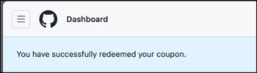
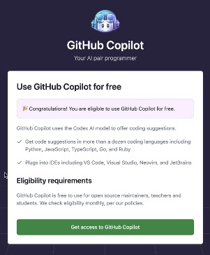

Benvenuto in Copilot Adventures! Questa serie di avventure di programmazione riguarda l'apprendimento di nuovi concetti e linguaggi utilizzando GitHub Copilot per aiutarti a scrivere codice. Cominciamo!
Scegli la tua avventura Copilot

1. Entra nell'Arena dell'Avventura
Per iniziare, entra nell'"arena dell'avventura" cliccando il pulsante qui sotto. Questo creerà un GitHub Codespace in cui potrai lavorare. Una volta caricato, seleziona il pulsante Crea codespace.

NOTA: Puoi utilizzare 60 ore di GitHub Codespaces gratuitamente ogni mese.
Se preferisci, puoi clonare il repository ed eseguirlo localmente:
git clone https://github.com/microsoft/copilotadventures
2. Scegli un'avventura
Prerequisiti: È utile avere una conoscenza di base dei linguaggi di programmazione.
Nuovo su GitHub Copilot?
Se sei nuovo su GitHub Copilot, devi installare le estensioni e vuoi imparare come iniziare a usarlo, inizia con l'Avventura di Riscaldamento.
Una volta completata l'avventura di riscaldamento e installate le estensioni, scegli un'altra avventura di GitHub Copilot dalla lista qui sotto:
Avventure per principianti
Avventure intermedie
Avventure avanzate
3. Inizia a programmare
Leggi la descrizione della tua avventura Copilot, le attività ad alto livello da eseguire e i suggerimenti di GitHub Copilot per aiutarti a scrivere il tuo codice.
- Usa GitHub Copilot e/o GitHub Copilot Chat per aiutarti a scrivere il codice per l'avventura. Puoi usare qualsiasi linguaggio tu preferisca. Prova a imparare un nuovo linguaggio se sei pronto per la sfida (più su)!
- Lascia eventuali commenti nel tuo codice per spiegare il tuo processo di pensiero e mostrare i suggerimenti che GitHub Copilot ha usato per aiutarti.
4. Invia la tua soluzione d'avventura (facoltativo)
Se desideri condividere la tua soluzione con gli altri, esegui i seguenti passaggi:
- Pubblica la tua soluzione d'avventura su un repository GitHub.
- Visita https://github.com/microsoft/CopilotAdventures/issues e seleziona
Nuova Issue. -
Usa la seguente convenzione di denominazione per il titolo dell'issue.
Soluzione per [Nome della tua avventura]Sostituisci
[Nome della tua avventura]con il nome dell'avventura che hai scelto di risolvere (esempio:Il duello leggendario di Stonevale). -
Aggiungi un link al tuo repository GitHub nella sezione del corpo.
- Se hai qualche feedback, condividi quello che hai trovato (buono o cattivo). Ci piacerebbe sentire il tuo feedback!
Prossimi passaggi: Impara un nuovo linguaggio o crea un'interfaccia utente per la tua avventura

Una volta completata la tua prima avventura, provaci di nuovo ma questa volta usa GitHub Copilot per completare l'avventura utilizzando un linguaggio che ti è nuovo. Ad esempio, se normalmente scrivi codice in C#, usa Copilot per aiutarti a risolvere l'avventura utilizzando Python o un altro linguaggio che vorresti imparare di più.
Prova a creare un'interfaccia utente per la tua avventura. Usa HTML/CSS/JavaScript puro o una libreria/framework a tua scelta. Lascia che GitHub Copilot/Chat ti aiuti con il codice dell'interfaccia utente. Se la tua interfaccia utente richiede immagini, considera l'uso di Bing Image Creator o un altro servizio di generazione di immagini AI.
Hai un'idea per un'Avventura Copilot? Invia una PR!
Hai una storia/enigma per un'avventura Copilot che ti piacerebbe proporre per gli altri? Ci piacerebbe vederlo! Invia una pull request a questo repository con la tua avventura e soluzione.
- Usa
Nuova Avventura Copilot: [Nome della tua Avventura]per il titolo della PR. Sostituisci[Nome della tua Avventura]con il nome della tua avventura. - Indica se la tua avventura è a livello principiante, intermedio o avanzato.
- Segui il template markdown usato con ogni avventura nella cartella Avventure mentre crei la tua avventura.
- Fornisci un'immagine per la tua avventura (usa Bing Image Creator o un'altra soluzione di generatore di immagini).
- Fornisci una soluzione utilizzando il tuo linguaggio preferito. Metti tutto il codice in un unico file (per mantenere le cose semplici) e includilo nella PR.
Esamineremo la tua proposta e la uniremo al repository se soddisfa i criteri.
Istruzioni per Riscattare un Coupon del Workshop GitHub Copilot
-
Accedi a GitHub.
-
Vai a https://github.com/redeem/XXX-YYY dove XXX-YYY è il codice coupon per il tuo workshop.

-
Compila il tuo indirizzo. Non ti verrà chiesto di inserire una Carta di Credito.
-
Seleziona
Salva. -
Nella pagina di riepilogo del coupon, seleziona
Riscatta.
-
Dovresti ricevere un messaggio sulla tua dashboard di GitHub.

-
Visita https://gh.io/copilot-free. Questo passaggio è necessario dopo aver riscattato il coupon. Non avrai accesso a GitHub Copilot fino a quando non ti sarai iscritto e configurato le tue preferenze.
-
Seleziona
Ottieni accesso a GitHub Copilot.
-
Scegli le impostazioni necessarie per il workshop (ad esempio seleziona
Consenti) e poi selezionaSalva e inizia.
-
Dovresti ora avere accesso a GitHub Copilot per 7 giorni!